OmniVTA: Visuo-Tactile World Modeling for Contact-Rich Robotic Manipulation
1. 论文速览
难度评级：★★★★☆。需要理解 diffusion policy / diffusion transformer、VAE/implicit neural representation、多模态融合、触觉传感器数据表示和真实机器人 imitation learning 实验设计。
关键词：Visuo-Tactile ManipulationWorld ModelContact-Rich ManipulationTactileVAEReflexive Control
| 阅读定位项 | 基于原文的简要回答 |
|---|---|
| 论文要解决什么 | 现有视触觉操作数据规模和任务覆盖不足；现有方法多把触觉当作被动观测，缺少显式接触动态建模和高频闭环触觉控制。 |
| 作者的方法抓手 | 先用 OmniViTac 提供 21,879 条、86 个任务、100+ 物体的对齐视触觉动作数据，再用 TactileVAE、两流 VTWM、LTD+gating 融合策略和 RLTC 组成 OmniVTA。 |
| 最重要的结果 | OmniVTA 在六类真实机器人任务上整体优于 DP、DP+tactile、KineDex、ForceMimic、RDP，并在泛化和扰动鲁棒性设置下保持最高或并列最高成功率。 |
| 阅读时要注意的点 | 核心不是“加了触觉”本身，而是把触觉变成预测对象、融合调制信号和高频纠偏目标；另需注意源码没有附录，超参数集中在实验设置正文。 |
核心贡献清单
- OmniViTac 数据集。21,879 条同步轨迹、86 个任务、126 个物体、六类物理接触模式；意义是把数据规模、任务多样性和触觉-视觉-动作时间对齐同时作为训练世界模型的基础。
- OmniVTA 方法框架。把触觉表示学习、视触觉世界模型、接触感知自适应融合和 60 Hz 闭环触觉控制放入统一 pipeline；意义是让触觉既参与预测，也参与策略生成和执行纠偏。
- 真实机器人验证。六类接触丰富任务上比较多个 imitation learning / force-conditioned / reactive baselines；意义是验证预测式接触建模和高频触觉反馈对泛化、扰动恢复有直接贡献。
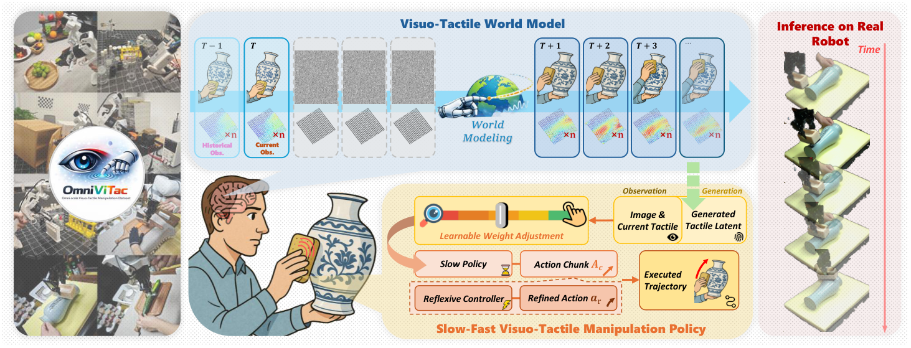
2. 动机
2.1 要解决什么问题
论文关注的任务是接触丰富操作，例如 wiping、assembly、peeling、cutting 等。这类任务不能只靠视觉判断，因为关键状态往往来自接触力、摩擦变化、滑移、插入阻塞、切断瞬间的力突变等触觉信息。视觉能告诉机器人“物体在哪里”，但很难可靠告诉机器人“当前接触是否稳定、是否过力、是否快要打滑”。
作者把问题分成两层：数据层面缺少大规模、任务多样且时间严格对齐的 vision-tactile-action demonstrations；方法层面则缺少把触觉信号显式用于接触动态预测和闭环控制的策略。
2.2 已有方法的局限
- 数据集局限：早期触觉数据多是静态按压或物体纹理采集；较新的 manipulation datasets 虽有动作轨迹，但任务数、物体数、传感器种类和高频触觉-视觉同步仍不足。
- 表示局限：许多方法把触觉作为辅助输入，用于弥补遮挡或识别接触状态，但没有把未来接触演化作为显式预测目标。
- 控制局限：action chunking 常以较低频率开环执行，遇到滑移、错位、外部扰动时不能即时纠偏；RDP 一类 reactive 方法虽引入快反馈，但作者报告其在强接触任务中可能产生过强接触，导致传感器受损风险。
2.3 本文的解决思路
作者借鉴人类 sensorimotor control：一方面形成对接触演化的 feedforward anticipation，另一方面用 tactile feedback 做快速 reflexive correction。对应到方法上，OmniVTA 先预测短时未来触觉 latent，再基于当前/预测触觉差异进行接触感知融合，最后用 60 Hz 的 RLTC 根据预测触觉与实际触觉之间的偏差修正动作。
3. 相关工作梳理
3.1 论文自述的相关工作
| 技术线 | 代表工作与定位 | 本文区别 |
|---|---|---|
| Tactile sensing 与 tactile representation learning | GelSight、DIGIT 等 visuo-tactile sensors 提供高分辨率接触几何；Sparsh、AnyTouch、UniT 等通过 masked autoencoding、contrastive learning 或 VQGAN-like latent modeling 学触觉表示。 | 本文不只学静态触觉表示，而是用四类触觉传感器支持的操作数据训练任务无关 tactile latent，并服务于世界模型和策略。 |
| Visuo-tactile manipulation policies | See-to-Touch、RoboPack、3D-ViTac、RDP、VLA-Touch、Tactile-VLA、TA-VLA 等显示触觉能补足视觉遮挡和细粒度控制。 | 本文强调触觉的预测性使用：预测未来接触、按接触概率调制视触觉权重，并用预测/观测差异进行闭环控制。 |
| Visuo-tactile manipulation datasets and systems | ObjectFolder2.0、AnyTouch、Octopi-1.5、RH20T、FreeTacMan、VLA-Touch、exUMI、AgiBot World 等覆盖不同程度的触觉、视觉、动作数据。 | OmniViTac 把任务数扩展到 86、轨迹到 21,879、物体到 126，并保留 30-60 Hz 触觉及动作数据和时间同步。 |
3.2 直接前作对比
| 维度 | DP / DP+tactile | RDP | KineDex / ForceMimic | OmniVTA |
|---|---|---|---|---|
| 核心思路 | Diffusion policy 生成 action chunk；DP+tactile 额外拼接触觉特征。 | 慢 diffusion planner + 快 tactile reactive controller。 | 基于视觉观测联合预测 action 和 force。 | 世界模型预测未来触觉 latent，融合策略生成慢动作，RLTC 高频纠偏。 |
| 关键假设 | 当前/历史观测足够生成短时动作。 | 触觉可用于反应式修正。 | force 或 tactile embedding 可作为动力学相关量。 | 未来触觉预测能提供接触状态先验，预测-观测差异能指导纠偏。 |
| 适用场景 | 一般视觉 imitation learning；触觉版适合有接触观测的任务。 | 接触扰动下的 reactive 操作。 | 需要力/接触信息的扩散策略。 | 擦拭、削皮、切割、装配、抓取、调整等多类接触丰富任务。 |
| 实验性能 | 表 2 中 DP 在多项 P 设置为 0；DP+tactile 有提升但仍低于 OmniVTA。 | 强于普通 DP，但在强接触任务中作者观察到过强接触。 | 部分任务优于 DP+tactile，但整体不及 OmniVTA。 | 表 2 中多数 O/G/P 设置最高；RLTC 相比 w/o RLTC 显著改善扰动表现。 |
4. 数据集：OmniViTac
OmniViTac 是本文方法的训练基础。它包含 21,879 条同步轨迹、86 个任务、126 个物体，记录 RGB-D、触觉信号、动作轨迹和连续 gripper aperture。作者将任务组织成六类物理接触模式：Assembly、Cutting、Adjustment、Peeling、Wiping、Grasping。

4.1 采集系统
- Robot demonstrations：UFACTORY xArm-7，包含 kinesthetic teaching 和 GELLO teleoperation 两种模式。
- Human demonstrations：TacUMI 手持采集设备，使用 RealSense T265 以 200 Hz 输出 6-DoF poses；轨迹结束后检查 tracking drift，位置误差大于 8 mm 的样本丢弃。
- 同构末端执行器：机器人与 TacUMI 使用相同平行夹爪，并记录归一化到 $[0,1]$ 的连续夹爪宽度。
- 视觉：wrist-view 和 third-person RGB-D；D435 为 $640\times480$，L515 为 $1280\times720$，相机 30 Hz。
- 触觉：Xense、Daimon、Tac3D-A1、GelSight Mini；Xense 是主要大规模采集传感器，提供 $35\times20$ 3D displacement fields at 60 Hz。
4.2 数据处理与质量控制
采集时所有 sensory streams 按原生频率异步记录，后处理按时间戳同步。每 50 条轨迹随机可视化 3 条轨迹做在线质量检查；离线工具继续检查并删除异常样本。训练前去掉首尾静止帧，将 RGB-D、触觉、动作通过时间戳对齐，时间误差低于 10 ms，并切分成训练片段。
4.3 六类触觉模式
| 模式 | 接触机制 | 触觉信息作用 |
|---|---|---|
| Assembly | 接触几何与多方向力协调 | 感知紧公差和插入是否成功。 |
| Cutting | 法向力逐步增大并在切断时出现力下降 | 判断穿透/切断过程。 |
| Adjustment | 扭转与剪切力 | 感知滑移和手内重定向状态。 |
| Peeling | 剪切与法向力连续耦合 | 维持工具-表面接触。 |
| Wiping | 法向压力 + 平面剪切 | 保持表面贴合并克服摩擦。 |
| Grasping | 多样力型，覆盖脆弱物体、透明物体和铰接物体 | 确认稳定抓取并调节法向/剪切。 |

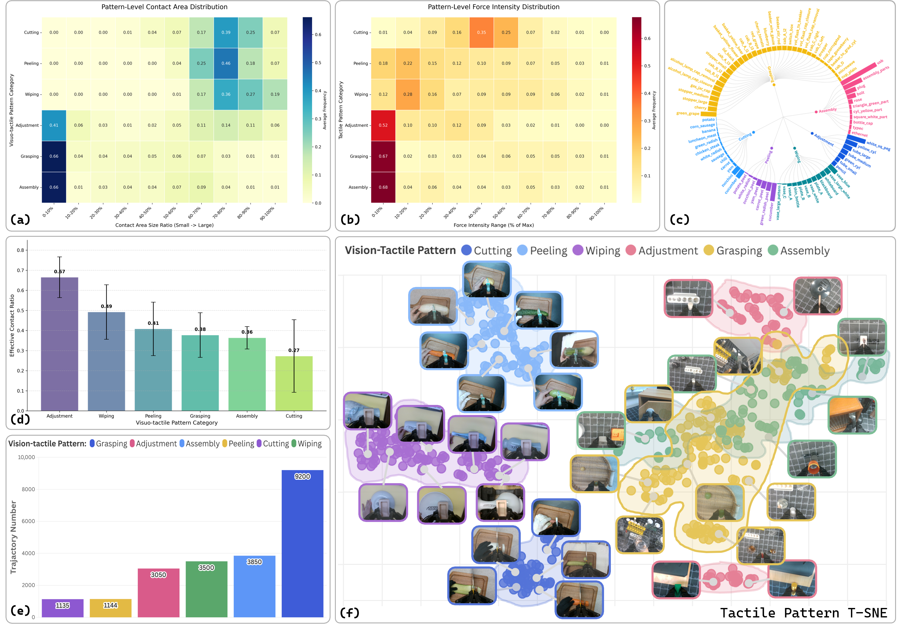
5. 方法详解
5.1 方法概览
OmniVTA 是 hierarchical slow-fast policy。Slow Policy 由 Visuo-Tactile World Model (VTWM) 和 Adaptive Fusion Policy (AFP) 组成，用低频视觉、高频触觉和本体状态规划长时 action chunks；Fast Policy 是 Reflexive Latent Tactile Controller (RLTC)，以 60 Hz 根据观察触觉与预测触觉输出细粒度 correction。最终执行动作是慢策略动作和快控制器输出的加权和。
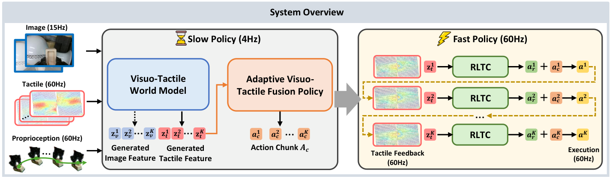
5.2 方法演变脉络
普通视觉 diffusion policy → 加入 当前触觉输入 → 显式建模 未来触觉预测 → 用 LTD 和 gating 把预测触觉转为接触感知策略输入 → 用 RLTC 把预测-观测差异转为高频纠偏动作。每一步都对应论文指出的一个缺口：视觉无法直接读出接触状态；当前触觉没有未来接触先验；简单拼接不会随接触状态改变模态权重；action chunk 开环执行不能快速响应扰动。
5.3 TactileVAE
TactileVAE 的输入不是高分辨率 tactile image，而是 3D marker displacement。单帧可表示为 $H\times W\times3$，三个通道对应 $x,y,z$ 位移。作者用 causal 3D convolution 做时空编码，使时刻 $t$ 的 latent 只依赖当前和过去观测，保证部署时没有未来信息泄漏。
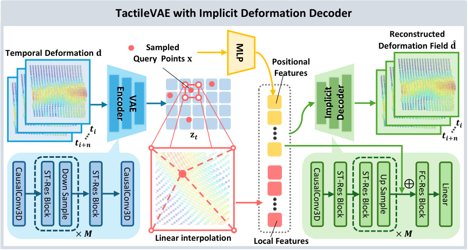
| $\mathbf{x}\in\mathbb{R}^2$ | 触觉表面上的二维查询坐标。 |
| $\mathbf{z}_t$ | 编码器输出的 tactile latent feature map，尺寸为 $H/s\times W/s\times C$，$s=2^M$。 |
| $\gamma(\mathbf{x})$ | 位置编码，使 MLP 能表达高频空间变化。 |
| $\Phi(\mathbf{z}_t,\mathbf{x})$ | 通过空间插值从 latent map 取出的局部特征。 |
| $\mathcal{D}_\theta$ | MLP implicit decoder。 |
| $\mathbf{d}(\mathbf{x})\in\mathbb{R}^3$ | 该点的三维 deformation vector。 |
直觉：触觉胶体表面形变是连续场，不应只按像素/marker 点重建。INR decoder 允许在任意坐标查询形变，从而把局部空间结构保留在 latent feature map 中。
第一项监督重建的 3D deformation；第二项是 VAE 的 KL regularization。实验设置中 $\lambda_{\text{KL}}=10^{-6}$。
5.4 Visuo-Tactile World Model (VTWM)
VTWM 采用 two-stream conditional generative framework：视觉分支用 SD-VAE 提取 image latents，触觉分支用预训练 TactileVAE 压缩 tactile signals；两个模态各自进入 spatial-temporal diffusion transformer，在共享条件下预测未来。条件来自 multi-modal observation conditioner，它分别聚合视觉、触觉和动作序列，并将 action 表示为 3D end-effector position 的 2D image-plane projection。
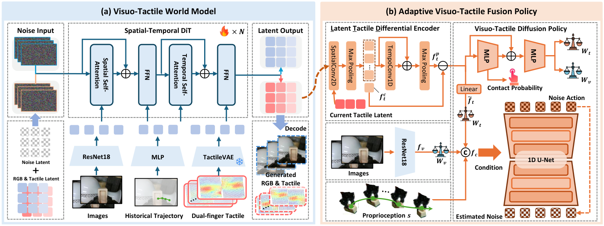
| $\mathbf{z}_o=\{\mathbf{z}_o^1,\dots,\mathbf{z}_o^K\}$ | 观测 latent 序列，包含 tactile latent $\mathbf{z}_t$ 和 visual latent $\mathbf{z}_v$。 |
| $m_i$ | 时间 mask；历史 conditioning 帧不作为生成误差，未来帧参与预测。 |
| $\epsilon_i$ | 扩散过程加入的真实噪声。 |
| $\boldsymbol{\epsilon}_\theta(\cdot)_i$ | 模型预测的第 $i$ 个时间步噪声。 |
前者突出时间上变化快的位置，后者突出接触响应幅度大的位置。二者都从 raw tactile resolution resize 到 latent resolution，用于强调高频接触动态和局部接触强度。
实验中 $\lambda_{\text{dyn}}=1.0$、$\lambda_{\text{amp}}=1.0$。这不是额外预测目标，而是对扩散噪声预测误差做空间-时间重加权。
5.5 Adaptive Visuo-Tactile Fusion Policy (AFP)
AFP 包含 LTD Encoder、contact-aware gating、visuo-tactile diffusion policy 三部分。
| $f_t^c$ | 当前 tactile observation 经 2D conv + max pooling 后的全局表示。 |
| $f_t^p$ | 预测多帧 tactile latents 经逐帧空间聚合和 1D temporal conv + max pooling 后的未来触觉表示。 |
| $f_t^p-f_t^c$ | 突出预测接触状态与当前触觉状态之间的差异。 |
接触概率由 tactile representation 经 MLP + sigmoid 预测，标签由 tactile deformation magnitude 阈值得到，并用 BCE loss 训练。Gating network 输出逐通道权重 $W_v,W_t$，满足 $W_v+W_t=1$。无接触时触觉权重接近 0；接触概率升高时触觉权重上升。
$A_c=(a_c^1,\dots,a_c^H)$ 是 coarse action chunk；$f_c=\text{concat}(f_{vt},s)$ 是融合多模态特征和机器人本体状态。训练使用 DDPM 噪声预测目标：
$$\mathcal{L}_{act}=\mathbb{E}_{t,A_{c,0},\epsilon_t}\left[\left\|\epsilon_t-\epsilon_\theta(\bar{\alpha}_t A_{c,0}+\bar{\beta}_t\epsilon_t,t,f_c)\right\|_2^2\right]$$AFP 总目标为 $\mathcal{L}_{AFP}=\mathcal{L}_{act}+\lambda_{ct}\mathcal{L}_{bce}$，实验中 $\lambda_{ct}=0.2$。
5.6 Reflexive Latent Tactile Controller (RLTC)
RLTC 解决 action chunk 开环执行的问题。它将单帧 tactile feedback 重复 $M$ 次以适配 TactileVAE 的时间压缩；将世界模型低频预测 tactile latent 最近邻上采样到 60 Hz，与当前 tactile feature 对齐；然后用 LTD Encoder 编码当前/预测触觉，再拼接过去 $h$ 步 TCP 坐标系下的 delta actions 和 delta gripper states，经三层 MLP 输出单步 refined action $a_r$。
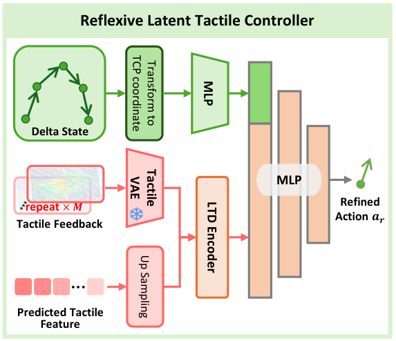
训练数据来自异常接触恢复片段。作者先估计每类任务的有效触觉分布均值和标准差，将过大或过小接触力识别为 abnormal states，再抽取从异常回到有效分布的 recovery segments 作为纠偏示范。
5.7 实现要点
- 触觉输入使用 3D marker displacement 而非 raw tactile images，以降低分辨率和提高推理频率。
- TactileVAE 使用 causal 3D convolutions，避免部署时依赖未来帧。
- VTWM 推理时不生成视觉观测，只预测未来触觉信号以提高 rollout 频率；视觉生成分支只在训练/消融中用于分析。
- World model 的 action condition 使用 3D 末端位置的 2D image-plane projection，作者实验显示其在 unseen position 上优于 3D absolute/relative actions。
- Policy 使用当前和上一帧视觉、同一时间窗口内 8 帧触觉、2 个本体状态；输出 6 个动作的 chunk，并插值到 60 Hz 执行。
6. 实验
6.1 实验设置
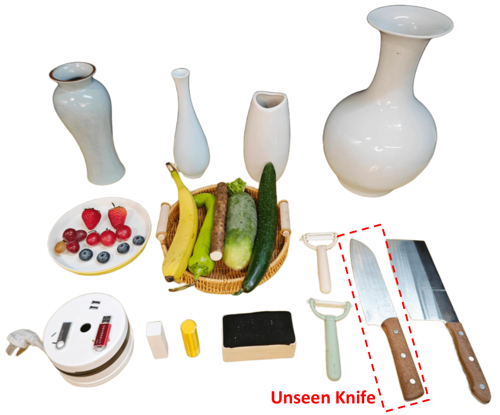
| 项目 | 设置 |
|---|---|
| 任务 | Wipe, Peel, Cut, Assembly, Grasp, Adjustment。 |
| 训练物体 | 每类选择 5-6 个物体，每个物体 150 条轨迹；如 wipe 用 4 种颜色/形状花瓶、盘子、白板，cut 用 cucumber、Chinese yam、carrot、pepper、banana。 |
| 数据划分 | 世界模型训练/测试为 90% / 10%。 |
| 真实机器人平台 | UFactory xArm7 + 平行二指夹爪 + 两个 fingertip tactile sensors；wrist RealSense D435 RGB at 15 Hz；触觉 60 Hz；真实操作实验只用 Xense。 |
| 评价设置 | Object diversity (O)、Generalization (G：unseen heights / unseen knife)、Perturbation robustness (P：垂直方向扰动物体破坏接触)。 |
| 评价指标 | 主指标为 success rate。Wipe/Peel/Cut 用处理长度比例；Assembly/Grasp 要完整插入或无损抓取；Adjustment 要姿态变化超过 60°。 |
训练配置表
| 模块 | 训练/超参数 | 来源 |
|---|---|---|
| TactileVAE | 使用 20% manipulation trajectories + 10 个额外物体触觉交互数据，约 1.2M tactile samples；训练 50 epochs；8 NVIDIA A100 GPUs；$\lambda_{KL}=1e-6$。 | 正文 §Experimental Setup |
| VTWM | AdamW, lr $1\times10^{-4}$, weight decay 0, per-GPU batch size 5, 100,000 steps, gradient norm threshold 0.1，20,000 steps 后启用 gradient clipping；$\lambda_{dyn}=1.0$, $\lambda_{amp}=1.0$。 | 正文 §Training Details |
| AFP | 同一训练集；OmniVTA 和 policy baselines 每类数据合并训练统一模型；AFP 250k steps；其他 baselines 350k steps；$\lambda_{ct}=0.2$。 | 正文 §Training Details |
| Policy input/output | 视觉 15 Hz，触觉 60 Hz，本体 60 Hz；输入为当前+上一帧视觉、同窗口 8 帧触觉、2 个本体观测；输出 6 个动作 chunk，执行时插值到 60 Hz。 | 正文 §Parameter settings |
| 推理时间 | Slow Policy 230 ms；Slow Policy w/ Visual Gen. 480 ms；Fast Policy 3.5 ms；硬件 RTX 4090D。 | Table policy_time |
6.2 主要结果

| Method | Wipe O/G/P | Peel O/G/P | Cut O/G/P | Assembly O/G/P | Grasp O | Adjustment O/G |
|---|---|---|---|---|---|---|
| DP | 0.12/0.05/0 | 0.06/0/0 | 0.28/0.10/0 | 0.10/0/0.05 | 0.20 | 0/0 |
| DP+tactile | 0.36/0.28/0 | 0.32/0.20/0.08 | 0.33/0.15/0.13 | 0.30/0.10/0.10 | 0.48 | 0.25/0.15 |
| RDP | 0.50/0.38/0.42 | 0.48/0.36/0.45 | 0.65/0.50/0.43 | 0.60/0.50/0.35 | 0.88 | 0.50/0.50 |
| OmniVTA w/o RLTC | 0.66/0.40/0.25 | 0.40/0.30/0.20 | 0.50/0.50/0.20 | 0.40/0.35/0.20 | 0.70 | 0.40/0.30 |
| OmniVTA | 0.80/0.58/0.60 | 0.55/0.48/0.63 | 0.85/0.83/0.60 | 0.60/0.50/0.40 | 0.90 | 0.65/0.65 |
表中最关键的对比是 OmniVTA 与 OmniVTA w/o RLTC：闭环控制在 Wipe P 从 0.25 到 0.60、Peel P 从 0.20 到 0.63、Cut P 从 0.20 到 0.60、Assembly P 从 0.20 到 0.40，说明 RLTC 主要收益体现在扰动恢复。与 RDP 相比，OmniVTA 在强接触任务中报告了更低触觉 deformation：平均 0.35、最大 0.72，而 RDP 平均 0.56、最大 1.1。
6.3 TactileVAE 结果
| Method | Wipe L2/cos | Peel | Cut | Assembly | Grasp | Adjustment |
|---|---|---|---|---|---|---|
| PCA | 0.091/0.810 | 0.085/0.430 | 0.109/0.400 | 0.071/0.720 | 0.036/0.600 | 0.069/0.560 |
| PointNet-AE | 0.059/0.910 | 0.067/0.850 | 0.062/0.840 | 0.058/0.900 | 0.028/0.750 | 0.047/0.760 |
| Ours | 0.038/0.930 | 0.033/0.880 | 0.031/0.940 | 0.022/0.910 | 0.011/0.720 | 0.017/0.850 |
TactileVAE 在六类任务的 L2 都最低，cosine similarity 除 Grasp 外最高。Grasp 中 PointNet-AE 的 cos 为 0.750，高于 Ours 的 0.720，但 Ours 的 L2 为 0.011，明显低于 PointNet-AE 的 0.028。
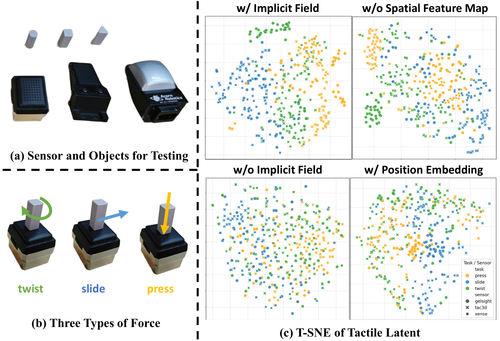
| TactileVAE 设计 | GelSight-Mini L2 | Tac3D-A1 L2 | Xense-QN1 L2 |
|---|---|---|---|
| w/o implicit decoder | 0.126 | 0.098 | 0.038 |
| w/ position embed. | 0.102 | 0.085 | 0.035 |
| w/o spatial feature map | 0.107 | 0.084 | 0.071 |
| w/ implicit decoder | 0.047 | 0.058 | 0.034 |
6.4 VTWM 结果与消融

| 任务 | Ours L2avg / Cavg | 次优基线 L2avg / Cavg | 解读 |
|---|---|---|---|
| Wipe | 0.059 / 0.93 | KineDex 0.082 / 0.81 | Ours 同时降低误差并提高方向一致性。 |
| Peel | 0.036 / 0.87 | KineDex 0.066 / 0.79 | 连续剪切/法向耦合任务中预测优势明显。 |
| Cut | 0.050 / 0.88 | UVA 0.077 / exUMI 0.72 | 高力变化场景仍保持较好长期预测。 |
| Adjustment | 0.025 / 0.85 | KineDex 0.053 / 0.70 | 手内调整的 torsion/shear 动态被较好建模。 |
| Assembly | 0.030 / 0.89 | KineDex 0.047 / 0.78 | 局部接触几何任务中世界模型较稳。 |
| Grasp | 0.010 / 0.68 | KineDex 0.017 / 0.59 | Grasp L2 最低，但 cosine 绝对值较其他任务低。 |
| 消融 | 设置 | L2 | Cos | 结论 |
|---|---|---|---|---|
| Action representation | Unseen position: 3D absolute / 3D relative / 2D | 0.075 / 0.056 / 0.042 | 0.72 / 0.88 / 0.91 | 2D image-plane action 对 unseen position 泛化最好。 |
| Joint generation | Seen position: no joint gen vs joint gen | 0.041 → 0.038 | 0.90 → 0.92 | 联合生成视觉特征给触觉预测提供全局动态线索。 |
| Dynamic weighting | Seen position: add dyn. weight | 0.038 → 0.035 | 0.92 → 0.93 | 强调快速变化和强接触区域有助于触觉预测。 |
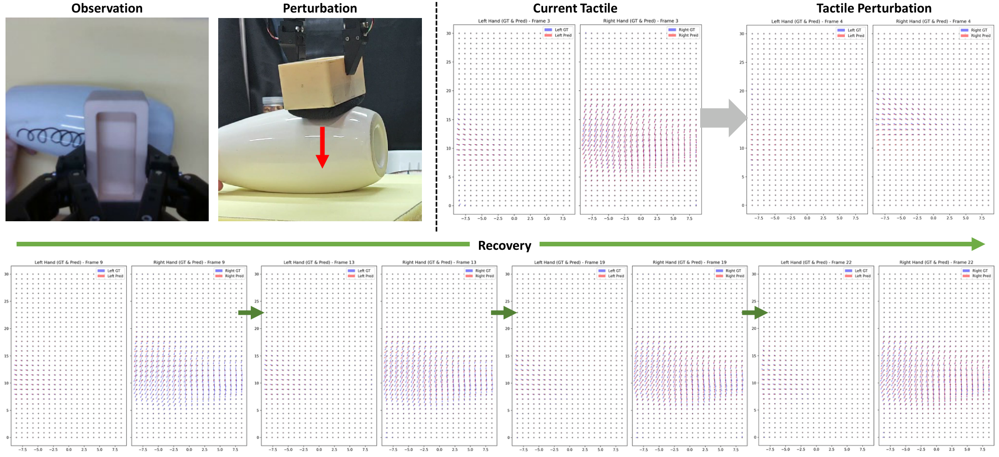
6.5 AFP 与 RLTC 消融
| Tactile pred. length | LTD | Gating | Visual gen. | Wipe | Peel | Avg. |
|---|---|---|---|---|---|---|
| 0 | × | × | × | 0.12 | 0.06 | 0.09 |
| 2 | × | × | × | 0.40 | 0.26 | 0.33 |
| 4 | × | × | × | 0.45 | 0.30 | 0.38 |
| 6 | × | × | × | 0.50 | 0.30 | 0.40 |
| 6 | ✓ | × | × | 0.57 | 0.36 | 0.47 |
| 6 | ✓ | ✓ | × | 0.66 | 0.40 | 0.53 |
| 6 | ✓ | ✓ | ✓ | 0.70 | 0.38 | 0.54 |
消融显示：预测触觉长度从 0 到 6，平均成功率从 0.09 升到 0.40；加入 LTD 后升到 0.47；加入 gating 后升到 0.53。加入 visual generation 的平均值只有 0.54，增益很小，同时推理时间从 230 ms 增至 480 ms，因此最终设计不依赖未来视觉生成。
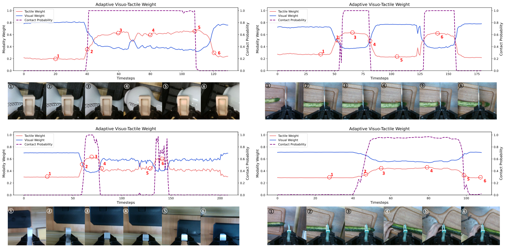
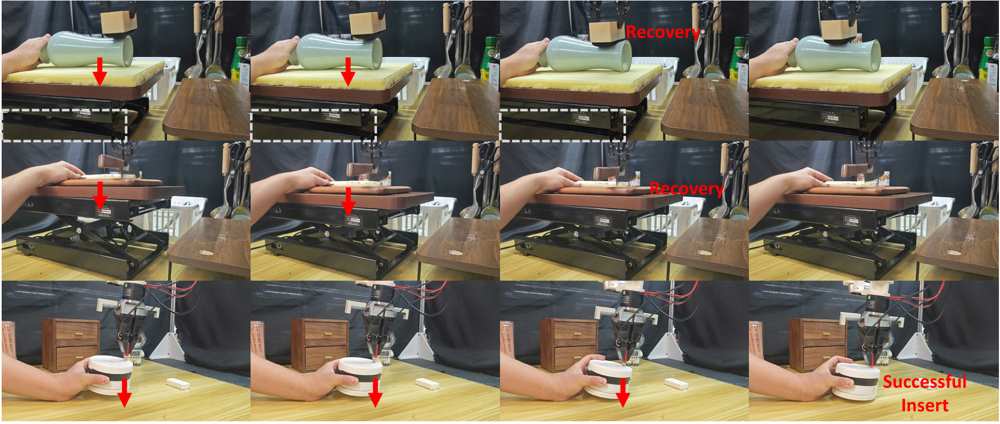
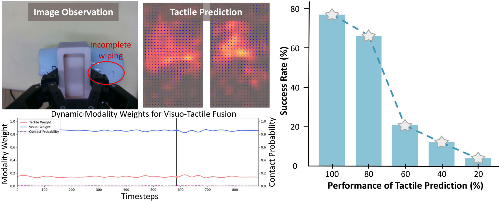
7. 分析、局限与边界
7.1 这篇论文最有价值的地方
基于论文自身贡献与实验，最核心的价值在于把“触觉”从被动 policy input 提升为三个可训练/可验证的对象：可压缩的 tactile representation、可预测的未来接触状态、可用于高频闭环纠偏的目标信号。这个价值不是单独由某个模块证明，而是由数据集统计、VTWM 预测指标、AFP 消融和真实机器人扰动实验共同支撑。
7.2 结果为什么站得住
- 任务覆盖：六类物理接触模式覆盖精密接触、表面摩擦、强法向力、连续剪切、抓取和手内调整。
- 评估设置：不只报告 object diversity，还报告 unseen heights、unseen tool 和接触扰动。
- 模块证据链：TactileVAE 重建表、VTWM 预测表、AFP 消融表、policy success table 分别对应 representation、prediction、fusion、control。
- 机制可视化：gate weight 随接触概率变化，prediction accuracy 降低导致成功率下降，扰动可视化显示从 no-contact 到 recovery 的过程。
7.3 作者自述或源码中明确出现的局限
正文 Conclusion 没有正式展开 limitations；源码末尾存在被注释掉的 “Limitation and future work” 段落，内容为：OmniViTac 当前是 single-arm、gripper-based tactile manipulation benchmark，尚未覆盖 dual-arm setting 或其他 end-effector types，例如 dexterous hands。该注释还提到未来工作将探索用更大更多样数据扩展 world model、扩展到 dexterous hands 与 dual-arm manipulation，以及 cross-embodiment transfer。由于这段在源码中被注释，本报告将其标为“源码注释中的作者意图”，不等同于正式正文结论。
7.4 论文中明确写出的适用边界
- 真实操作实验使用 xArm7、平行二指夹爪和 Xense 触觉传感器；其他传感器主要用于 TactileVAE representation validation。
- 任务定义集中在六类接触丰富 manipulation patterns，不覆盖灵巧手全手触觉、双臂协作或非夹爪末端执行器。
- VTWM 推理阶段主要使用未来触觉预测，不使用未来视觉生成；作者依据是 visual generation 推理成本高且对策略成功率提升不显著。
- RLTC 的训练依赖从人类轨迹中识别 abnormal tactile states 和 recovery segments；该过程假设每类任务能估计有效触觉分布。
7.5 章节覆盖与验收摘要
已完成 Phase 2.5 内部章节盘点：Abstract、Introduction、Related Works、The OmniViTac Dataset、Methodology、Experimental Evaluation、Conclusion、Acknowledgments 均已映射到报告对应章节；没有 Appendix 文件。
已覆盖 所有源码图像文件：teaser、dataset_teaser、OmniVTA-6pattern、data_stat_family、system、vae、slow-policy、controller、object、manipulation、tsne、wm、wm_disturb、gate_weight、mp_disturb、prediction。
已覆盖 主要表格：dataset comparison 摘要、object/task setup、main success rate、TactileVAE comparison、TactileVAE ablation、VTWM prediction 摘要、VTWM ablation、AFP ablation、policy inference time。
注意 由于 arXiv 源码没有附录，报告中没有附录引用标注；这不是遗漏，而是源文件结构所致。